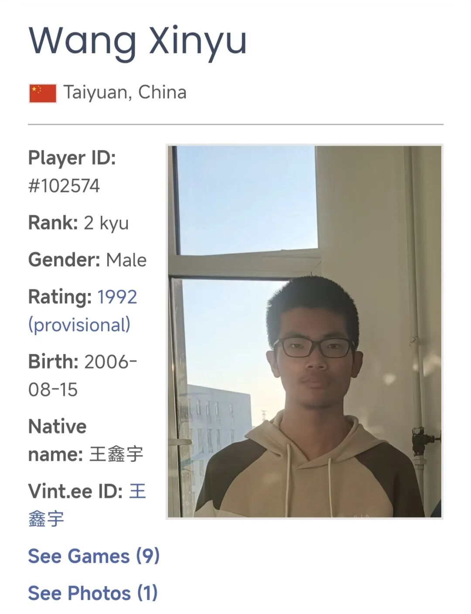
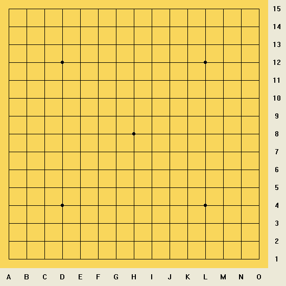
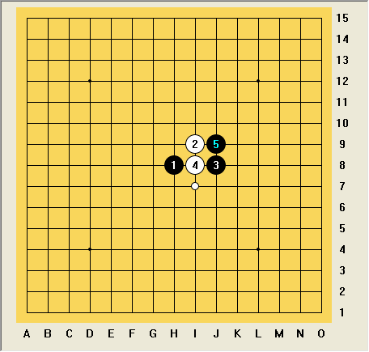
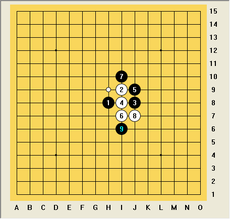
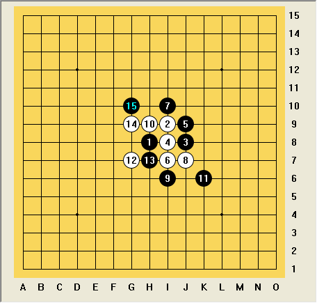

2025第六届世界连珠青少年杯A+B组第二轮
怎么突然投子了？
在今年的世界连珠青少年五子棋杯中，我以八胜一负的成绩获得A+B组冠军。第一轮之述备矣：棋评｜2025第六届世界连珠青少年杯A+B组第一轮：踉踉跄跄的必胜，第二轮我又遇到了一位熟人，王鑫宇2级。
王鑫宇
2025洛阳市全民健身运动月比赛公开组季军（两打）
2025河南省（夏季）等级赛公开组第九名（两打）

王鑫宇是山西太原人，大学就读于山西晋城的山西科技学院，我们在线下交流过很多盘塔十，彼此棋风业已熟悉。最近端午节线下交流中，他面对多次蝉联河南省高校比赛冠军的宋之杰学长，有一盘棋强势顶和，部分对局不落下风。虽然他今年才开始接触专业连珠赛事，因设备问题仓促调试应战，第一轮仍强势击败了爱沙尼亚选手Rauno Lääne，这位选手比赛前国际排名曾居于517位。实力不容小觑。

开局没什么太多想法，我知道王在塔十里喜欢开花浦。正好我抢到了第三手，于是临时起意开了个恒星出来。王的白4通了寒星，我黑5没打算走平衡且凶险的寒星四打开展漫长的磨棋盘之旅（如果王会前面的定式的话，这并不是明智之举），而是直接走三打考验他必胜。我有九成的把握相信他不会这个必胜的后续。

估摸着王也没见过这个必胜，他直接走白6让我拿黑展示了。白6单走一个活三，我黑7顺手挡上期待后续发展。我猜测他可能想强行把局面通回常规的疏星二打，实际上不成立。白8在下侧团角造势，我通过模糊的印象和计算得到，这个局面我黑9可以主动活三和白棋做交换，交换后我仍具备先手优势。我也可以直接盖眠三控盘，缓棋等待白棋行动。短考后我黑9选择了等待，直接盖眠三控盘。

接下来王的走棋路线行云流水：白10，斜线活三！白12，横线跳活三！白14，做一步四三杀！我的防守压力很小，因为我笃定这是一个黑必胜局。于是自然跟防后，来到黑15，简单计算后可知直接盖四三点白即一无所有，仅剩的眠三虽可继续跳出去与横线接应，终究没有后续攻崩。所以黑15简单盖眠三点，明显的攻防易手，轮到我表演。此时我手握四个活二，看起来胜利在望，但仍需精确计算进攻路线，尽可能利用T级别以上的进攻方式收官。只待对手白16是否会有意想不到的强防。

就在这千钧之发时，王投降了？！这让我一头雾水，这个局面虽然我已优势很大，但离必胜还很漫长。怎么能临阵脱逃？我打算用爱沙尼亚智力运动平台与王对话，又担心使用中文有传递密约通棋之嫌，于是用英文打出一句“What??”。王鑫宇也很快回应“输了输了”。原来他认为自己已经攻崩，局面大劣，不想再做“悲伤的防守”，希望保存体力继续打后续轮次。感谢朋友担待，按照以往经验，其实这个局面我最容易出事故。我经常前盘气吞山河，出杀前一步鬼招，直接大漏勺送给对手。王鑫宇直接跳过这一过程送我胜局，也可以称得上是“连珠好人”了。
后续轮次中王鑫宇击败了北京名将药博凡以及我第一轮的对手艾高强，最终位列A+B组第20名，可见一斑。落败的对局中很多是因为不熟悉对局环境，例如第三轮其对战上海宁皓然时因调整视频设备而浪费近二十分钟局时，是总局时的⅔。第九轮他差点击败了比赛前国际排名的282位的俄罗斯选手Vsevolod Troitsky，因滑标和漏算遗憾落败。但其实力毋庸置疑，赛后获得的等级分相当于国际排名第770位。期待其后续表现。
------
前两轮顺风顺水，来到第三轮，我遇到了一位以往比赛相遇过的欧洲棋手，而他的开局却让我心惊。欲知后事如何，请关注下一篇棋评。
------
｜你认为白16有没有较好的防守？欢迎你在评论区留下看法！期待👍🏻和❤️！